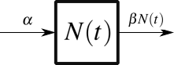
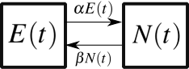
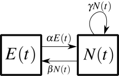
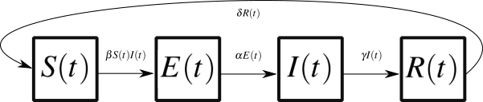

Writing continuous models#
Compartmental models provide a clear map of the variables needed to describe a system and of the mechanisms involved in their dynamics. In continuous time, we can follow a simple recipe to go from a compartmental model to a system of discrete equations tracking the change of key variables at every time step of the model.
We will write down the change in the quantities of interest over time. We denote \(dN(t)/dt\) the small change \(dN(t)\) in the quantity \(N(t)\) calculated over some infinitely small time window \(dt\). One can interpret it as the change in \(N(t)\) over a small change in \(t\). In other words: \(dN(t)/dt\) is the slope of the time series of \(N(t)\) at time \(t\), and captures the rate of change of \(N(t)\) at time \(t\). And as it turns out, we will be able to recover the unknown time series \(N(t)\) from the differential equation \(dN(t)/dt\).
The general recipe to write is as follows.
i. Every compartment corresponds to a variable that needs to be tracked over time and for which we need a differential equation.
ii. Every arrow entering a compartment corresponds to a positive term in the differential equation for that variable.
iii. Every arrow leaving a compartment corresponds to a negative term in the differential equation for that variable
Here are some rapid fire examples:

We can follow the dynamics of \(N(t)\) using the following differential equation: $\( \begin{align} \frac{d}{dt}N(t) &= \alpha - \beta N(t) \; . \end{align} \)\( There is a constant input \)\alpha\( and a variable output \)\beta N(t)\(. Therefore, over a small time window \)dt\(, \)N(t)$ will change by the difference between the input and the output. That’s it! Things can get slightly more complicated in more complicated models.

Two compartments so, as a general rule of thumb, we should need two variables. And so we write the following system of differential equations: $\( \begin{align} \frac{d}{dt}E(t) &= \beta N(t) - \alpha E(t) \; , \\ \frac{d}{dt}N(t) &= \alpha E(t) - \beta N(t) \; . \end{align} \)$
However, in this case the expected total number of agents should never change and the total population \(P\) should always be equal to \(P(t) = E(t) + N(t)\). We can convince ourselves that this population should not change since its derivative is equal to zero; which means no change! Formally, this can be written as $\( \begin{align} \frac{d}{dt}P(t) &= \frac{d}{dt}E(t) + \frac{d}{dt}P(t) = 0 \; . \end{align} \)\( So while our system is described by two variables, it has only one *degree of freedom*. Meaning we only need one quantity and we know the state of the entire system. If we know \)E(t)\(, we know that \)N(t) = P - E(t)$. We therefore only need one of the two differential equations to describe the system above. But if we look at the next system, we’ll see why that doesn’t work if the population isn’t conserved

We follow our general recipe and write, $\( \begin{align} \frac{d}{dt}E(t) &= \beta N(t) - \alpha E(t) \; , \\ \frac{d}{dt}N(t) &= \alpha E(t) + \gamma N(t) - \beta N(t) \; . \end{align} \)\( The population \)P\( now follows \)\( \begin{align} \frac{d}{dt}P(t) &= \frac{d}{dt}E(t) + \frac{d}{dt}P(t) = \gamma N(t) \; . \end{align} \)\( The population changes! So after we write down an equation for \)E(t)\(, we either need \)dP(t)/dt\( so that we can track \)P(t)\( and use \)N(t) = P(t) - E(t)\( or we need to directly use \)N(t)$. The system therefore has two degrees of freedom since we need two quantities to fully describe its state and dynamics.
In general, every conserved quantity provides an opportunity to reduce the number of degrees of freedom in our system of equations.
Note
These equations are all called ordinary differential equations (or ODEs) since they all depend on a single independent variable: time. We will therefore often refer to these mathematical models as system of ODEs for simplicity..
SEIRS epidemiological model#

We follow our general recipe and write, $\( \begin{align} \frac{d}{dt}S(t) &= \delta R(t) - \beta S(t)I(t) \; , \\ \frac{d}{dt}E(t) &= \beta S(t)I(t) - \alpha E(t) \; , \\ \frac{d}{dt}I(t) &= \alpha E(t) - \gamma I(t) \; , \\ \end{align} \)$
Again, we do not need a fourth equation since this is a conserved population \(S(t) + E(t) + I(t) + R(t) = N\). We could always get \(R(t)\) from the three other degrees of freedom: \(R(t) = N - S(t) - E(t) - I(t)\). However, it can be a good idea to be thorough and write the fourth equation, $\( \begin{align} \frac{d}{dt}R(t) &= \gamma I(t) - \delta R(t) \; , \end{align} \)\( since the condition of a conserved population can also be used to double check any solution we get out of the system. In fact, it can also help us make sure we wrote down the equations correctly since it implies that \)\frac{d}{dt}S(t) + \frac{d}{dt}E(t) + \frac{d}{dt}I(t) + \frac{d}{dt}R(t) = 0$, which we easily check in this case. In general, we can also test the validity of model runs by testing for a conserved population. But this also brings us to our next topic. How do we actually run these models?